Café 100 % végétal · Marolles, Bruxelles
Lucifer Lives
Cafés de spécialité, lunch du midi et brunch du week-end, entièrement végétal. Sous les affiches de films d'horreur, avec du métal dans les enceintes et un canapé dont on ne se relève pas.
- 4,7 · 1 140 avis Google
- Avoine ou coco
- Chiens bienvenus
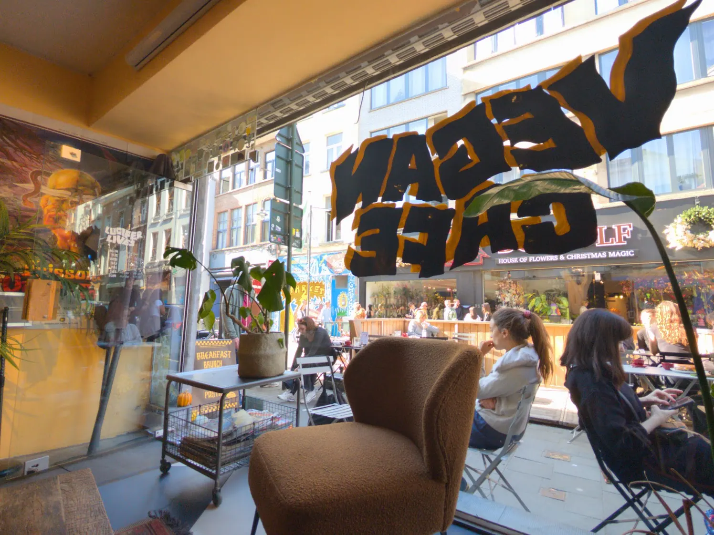
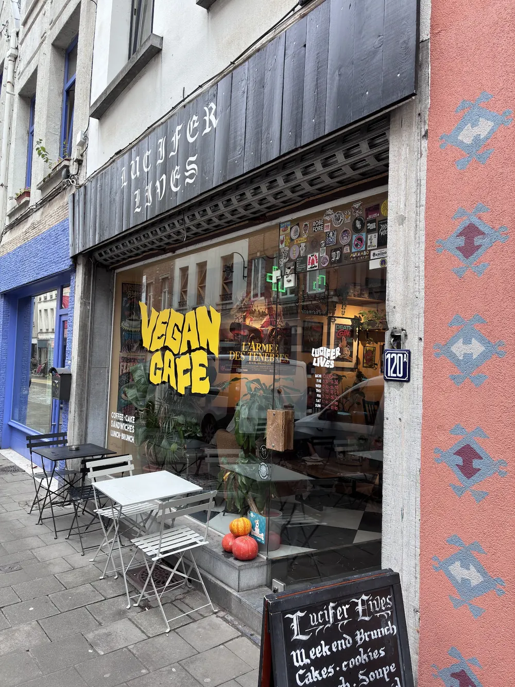
Le café
Un canapé dont on ne veut plus bouger
Au cœur des Marolles, entre la place du Jeu de Balle et les antiquaires de la rue Haute, Morgane et Lucas Vargiu ont ouvert un café où tout est végétal, jusqu'au dernier cookie.
Carrelage en damier noir et blanc, murs moutarde couverts d'affiches de cinéma fantastique, des numéros de Mad Movies à feuilleter à l'entrée et du hard rock en fond sonore. Les fauteuils orange et le grand canapé près de la vitrine se remplissent vite ; quand il fait beau, la terrasse prend le soleil sur le trottoir.
On commande au comptoir, on s'installe où l'on veut. Les chiens entrent avec leurs maîtres.
- Pâtisserie maisonMorgane est pâtissière végétale : cakes, cookies, red velvet.
- Brunch le week-endSamedi et dimanche, en assiettes copieuses.
- TerrasseAu soleil, rue Haute, quand le temps le permet.
- 4,7 sur 5Note moyenne de 1 140 avis Google.
« Une adresse chaleureuse, avec une terrasse ensoleillée et surtout ce fameux canapé, d'un confort exceptionnel. »David, avis Google, octobre 2026
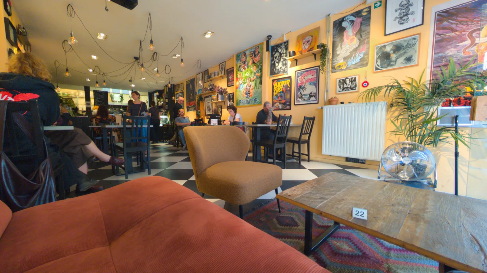
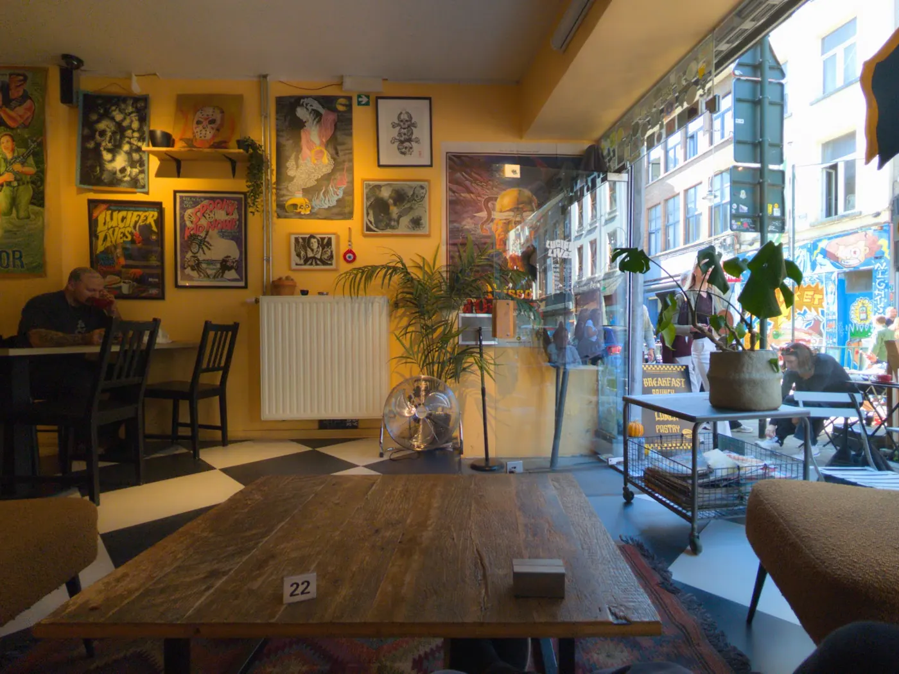
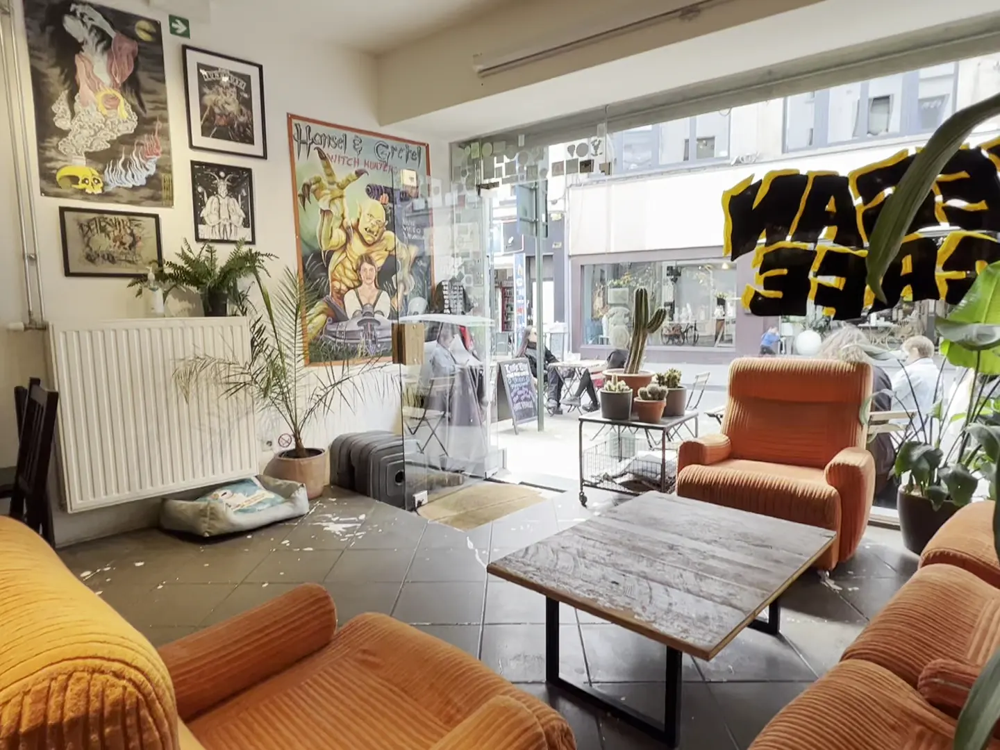
La carte
Du premier espresso au brunch qui bluffe
Tout est végétal, tout se commande au comptoir. La cuisine suit trois moments de la journée ; les cakes et les cookies, eux, sont là du matin au soir.
Petit-déjeuner
Café de spécialité, chai ou matcha, avec un cookie ou une part de cake du comptoir.
Lunch
Burgers, sandwichs, soupe et plats chauds. Pendant le service du midi, les ordinateurs portables restent fermés.
Brunch
Les assiettes copieuses du week-end, « à tester au moins une fois » selon les habitués.
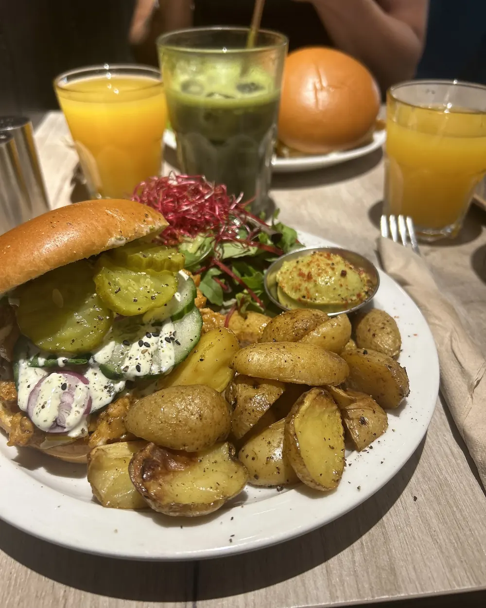
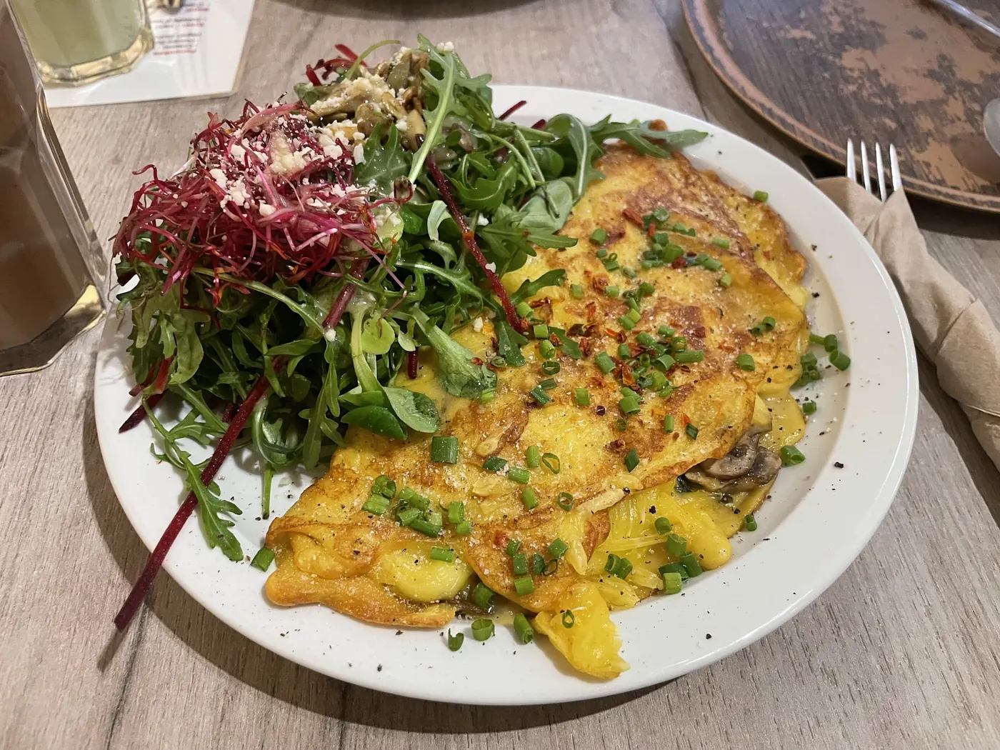
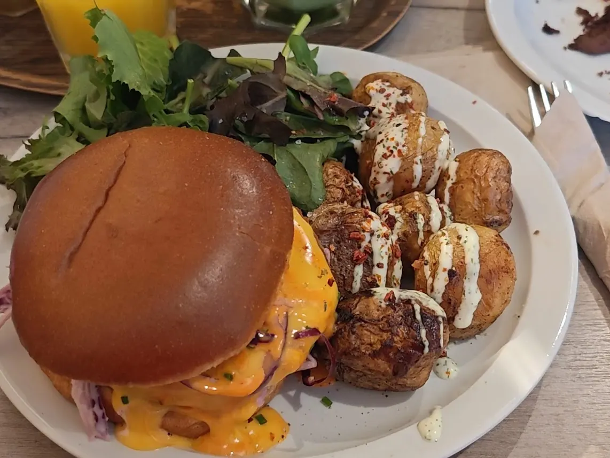
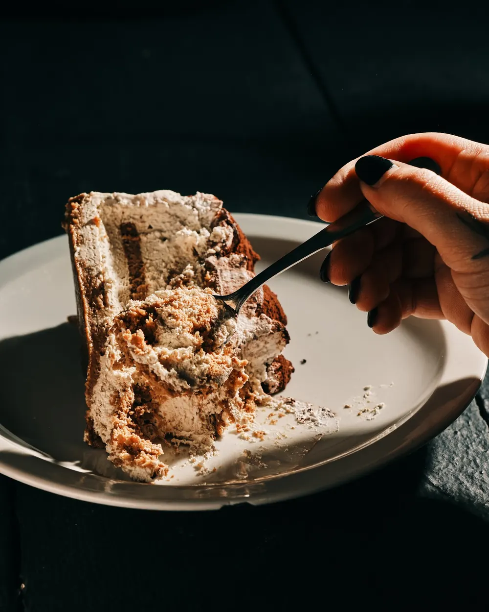
Déjà passés par la carte
- Sandwich au « faux poulet »
- Hachis parmentier au seitan
- Gnocchis à la crème de cajou
- The Hangover, bagel du brunch
- Red velvet layer cake
- Shortbread aux myrtilles
- Matcha à la pêche, à la lavande
Plats cités par le guide Le Fooding et par les avis Google ; la carte du lunch change, demandez au comptoir ce qui est servi aujourd'hui.
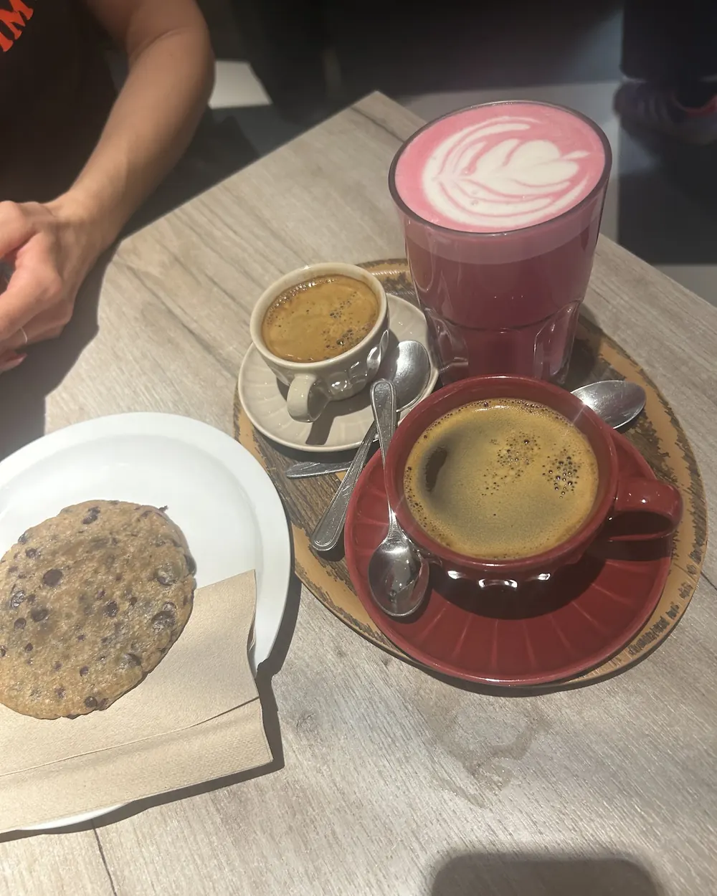
Pour les bêtes à poil
Un puppycino offert à votre chien
Une petite tasse de crème de coco fouettée, gratuite, pendant que vous prenez votre café. Ici, les chiens sont les bienvenus.
« De plus on a offert (gratuitement) un puppycino à notre chien, elle a adoré 😋. »Olympelabola, avis Google
Avis Google
« Ma meilleure expérience vegan à ce jour »
Ce que les clients écrivent sur Google après leur passage rue Haute.
Horaires & accès
Six jours sur sept, brunch le week-end
Horaires
| lundi | fermé |
|---|---|
| mardi | 9 h 30 – 16 h 30 |
| mercredi | 9 h 30 – 16 h 30 |
| jeudi | 9 h 30 – 16 h 30 |
| vendredi | 9 h 30 – 16 h 30 |
| samedi | 10 h – 17 hbrunch |
| dimanche | 10 h – 17 hbrunch |
Horaires de la fiche Google, relevés le 19 novembre 2026.
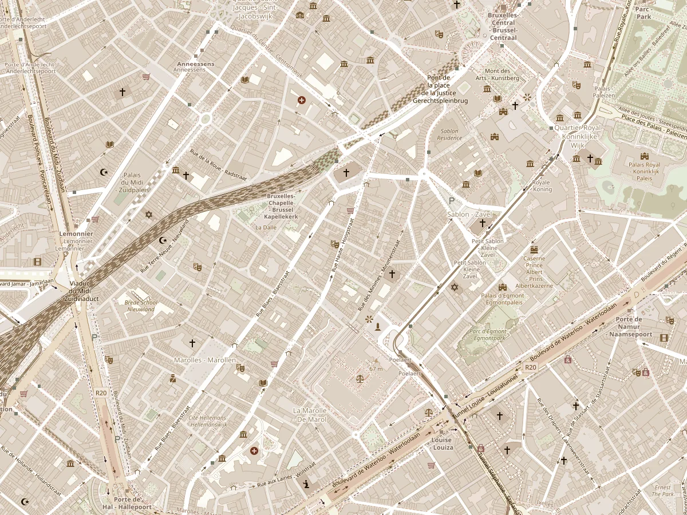
Itinéraire © OpenStreetMapDans les Marolles
Entre la place du Jeu de Balle et les antiquaires des rues Haute et Blaes : une pause idéale après la brocante.
Les nouveautés
Pour les specials du moment, le café a son compte Instagram. Suivre le café